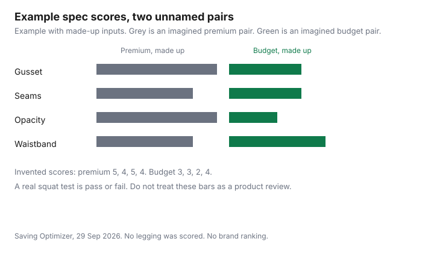

Clothing · Canada
Activewear Dupes in Canada: How to Judge Leggings and Workout Gear Without Paying Premium Prices

The way to judge an activewear dupe in Canada is to check the spec list, not the brand: fibre content, gusset, seam type, squat-test opacity, waistband, and pockets. A cheaper tight is a saving only when it does the job of the one you meant to buy. This page does not rank brands, name a best legging, or print a premium price. The method is a spec list you can run in a fitting room or at home: fabric content, gusset, seams, opacity, waistband, and pockets. A dupe is a different company's own product that aims at a similar use. A counterfeit is something sold as the brand when it is not. A grey-market import can be genuine and still outside the brand's Canadian warranty or return desk. Those are different risks. lululemon's Canadian shop has a We Made Too Much section. A Like New story on the Canadian site, as returned on 29 Sep 2026, said Like New shopping is available across the United States and to stay tuned for Canada. Confirm that page before you travel for it. The Costco clothing checklist is the warehouse version of the same idea.
Key takeaways
- Judge stretch clothes by fibre content, gusset, seam type, squat-test opacity, waistband, and pockets. No brand score was measured. The chart's points are made-up inputs.
- Costco, Old Navy, Winners, and store brands are places to run that test. They are not a ranking, and no price from those sites was kept.
- The Canadian lululemon shop publishes We Made Too Much. The Like New story text returned on 29 Sep 2026 said the resale shop is in the United States and to stay tuned for Canada.
- The Canadian shop's return policy said We Made Too Much items are final sale unless you are a member, in which case a member may return sale items for a gift card. Read the current policy before you buy.
- A dupe is legal as someone else's product. A counterfeit sold as the brand is not the same thing. Search recalls-rappels.canada.ca for a named product.
Why premium activewear costs what it does
Premium prices, when they are high, are a mix of fabric, pattern work, fit testing, stores, and the name. This guide does not cite a cost breakdown from any brand, so it will not say what share is fabric and what share is marketing.
You do not need that split to shop. You need the specs the garment must meet for your workout, and the price on the tag in front of you. A gym membership is a separate bill: gym versus home workouts and budget gyms. Do not add a clothing price you have not seen to a membership fee you have not re-checked.
The spec checklist: fabric weight, gusset, seams, opacity
Read the fibre content on the label. Note the percentage of elastane or spandex, because that is the stretch, and the rest of the fibre, because that is the hand-feel and the heat behaviour.
Fabric weight in grams per square metre is sometimes on a hangtag and sometimes absent. If it is absent, do not invent it from the thickness in your fingers. A gusset is the extra piece at the crotch. Look for one. A single seam through the crotch on a tight you will squat in is a different product. Flatlock seams lie flatter and catch less. A raised seam can be fine. It can also rub. Opacity is the squat test: stand in the fitting room, or at home if you can return the item, and bend. If the fabric goes sheer, it failed, regardless of the price. The waistband should stay up when you move, without digging. Pockets are useful only if they hold a key without pulling the waist down. Write pass or fail. Do not average them into a score you treat as science. The chart later uses made-up scores only to show two profiles side by side.
Costco, Old Navy, Winners and store brands: how to test before you commit
The test is the same in a warehouse, at Old Navy, at Winners, or on a store brand. Try the size you wear, do the squat test, read the fibre line, and check the return rule before you cut the tag off.
Costco's clothing return position is in the Costco clothing guide: the 1 August 2026 conditions do not list clothing among the exceptions, and future limits are shown at purchase. Other retailers' change-of-mind rules are not a legal right in general. The return-policy guide is the place for that. This guide does not cite an Old Navy or Winners price. Do not treat a sale sign as a spec. A discounted gift card or a cash-back portal, if you use one, changes the money you tender. It does not change opacity. Amazon.ca prices move. The Amazon price-tracking guide is for watching a number, not for declaring a tight genuine.
Warehouse sales, outlets and brand discount sections
A warehouse sale and an outlet are still the spec test, plus a stricter return rule. Read the sign.
On 29 Sep 2026 the Canadian lululemon shop's We Made Too Much category resolved as a sale section, and the Canadian return-policy page content returned this line: sale items from We Made Too Much are final sale and cannot be returned or exchanged unless you are a member, and members can make in-store exchanges or return sale items for a lululemon gift card. Gift cards themselves were described as final sale in that same policy. Policies change. Open the page on the day you buy. Product names and sale prices change, so none are repeated here. There is no ranking of those products.
The Like New story at shop.lululemon.com/en-ca/story/like-new, as returned on 29 Sep 2026, said Like New launched across the United States, that Like New is available across the United States, and to stay tuned for Like New in Canada. Do not assume a Canadian resale shop or a gift-card amount. If you want last season's goods, We Made Too Much is the Canadian section to look at. Like New shopping in Canada was not confirmed.
Counterfeits vs dupes: marketplace red flags
A dupe is another maker's product. Buying it is an ordinary purchase.
You judge it on the spec list. A counterfeit is offered as the brand, often with a logo, a style name, or packaging that copies the real article. That is a different legal problem, and this page is not a prosecution guide. Walk away from a marketplace listing that is far below prices you can see on the brand's own Canadian site, that will not show the care label and the neck label, or that pressures you to pay off the platform. Grey market means genuine goods sold outside the brand's authorized Canadian channel. The item can be real and still be final sale with no Canadian warranty. Ask the seller which of the three you are buying, and keep the answer in the listing. Health Canada's recall site is recalls-rappels.canada.ca. Search the product name there. Cross-border duty on household goods is the tariff guide, which does not set an apparel threshold. This page does not invent one.
Care to extend life: heat, fabric softener, pilling
Stretch clothes fail from heat and from softener residue that coats elastic. Follow the care symbol.
The garment-care guide has the Canadian symbol temperatures, including tumble limits and do-not-tumble. If the tight says hang to dry, do that. Fabric softener is a product choice this guide does not price. Skipping it on elastane is the habit. Pilling on the inner thigh is abrasion. Wash inside out, in a bag if you have one, and do not treat a shaver as a reason to buy a sheer pair. A pair that fails the squat test on day one will not improve.
| Spec | How to test |
|---|---|
| Fabric content | Read the label. Write the elastane or spandex percent and the other fibres. If weight in grams is missing, leave it blank. |
| Gusset | Look at the crotch. A separate piece is a gusset. A single seam is not. |
| Seams | Flat seams lie flatter. Feel them against the skin in the fit you will actually use. |
| Opacity | Squat in private. If the fabric goes sheer, it fails. Do not buy it because the colour is right. |
| Waistband | Move. It should stay up without a painful dig. A pocket that pulls it down fails with it. |
| Pockets | Put the key or card you actually carry in the pocket and walk. Empty pockets do not count as a pass. |
| Return rule | Read it before you remove tags or wash the item. Sale sections are often stricter. We Made Too Much is addressed above. |
| What it is | What you are buying | Risk |
|---|---|---|
| Dupe | Another company's product, under that company's name, aimed at a similar use. | It may fail the spec test. It is not sold as the premium brand. Judge the garment. |
| Counterfeit | Offered as the brand when it is not that brand's product. | You do not get the brand's spec or its return desk. Walk away from label photos that will not show the real marks. |
| Grey market | May be genuine, sold outside the brand's Canadian channel. | Warranty and returns may not match the Canadian shop. Ask before you pay. No duty figure is stated here. |

Sources
- lululemon Canada, We Made Too Much category on shop.lululemon.com/en-ca, and the Canadian return policy, content returned 29 Sep 2026. Sale items from We Made Too Much described as final sale unless you are a member, with member returns for a gift card.
- lululemon Canada, Like New story, shop.lululemon.com/en-ca/story/like-new, content returned 29 Sep 2026. Text said Like New is available across the United States and to stay tuned for Canada.
- Costco membership conditions dated 1 Aug 2026, used for the clothing-return cross-reference, are cited in the Costco clothing guide. No counterfeit count was used.
Frequently asked questions
Are activewear dupes as good as lululemon?
This page does not say yes or no, because no pair was lab-tested and no brand was scored. A dupe is another company's product. Run the same checks you would run on a premium pair: fibre content, gusset, seams, squat-test opacity, waistband, and pockets. If it fails the squat test, the lower price is not a saving. The chart's scores are made-up inputs, not a ranking.
How do I test leggings before buying?
Read the fibre label, look for a gusset, feel the seams, and squat where you can see whether the fabric goes sheer. Walk with whatever you would put in the pocket. Then read the return rule before you remove the tag. The same steps apply at Costco, Old Navy, Winners, or a store brand.
Is buying a dupe legal?
Buying another company's own product, sold under that company's name, is an ordinary purchase. This page is not legal advice. A counterfeit offered as a brand it is not is a different thing, and you should not buy it. Grey-market goods can be genuine and still sit outside the brand's Canadian returns. Ask which of the three the listing is.
How do I spot counterfeit activewear online?
Treat a listing that claims the brand, hides the neck and care labels, and pushes you off the payment platform as a reason to stop. Compare with what the brand's own Canadian site shows, without assuming a low price alone proves a fake. Search the product on recalls-rappels.canada.ca.
Does lululemon have a resale or discount section in Canada?
The Canadian shop publishes We Made Too Much. Its return policy, as of 29 Sep 2026, said those sale items are final sale unless you are a member, who may return them for a gift card. The Like New story on the Canadian site said Like New is available across the United States and to stay tuned for Canada. Confirm that page before you count on a Canadian resale shop.
Researched and drafted with AI assistance and fact-checked against official Canadian sources. How we create content.
Note: Education only. This page does not rank products.